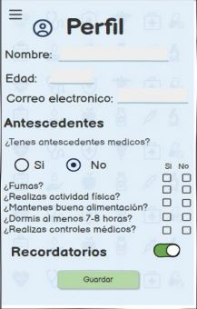

Descripción del proyecto
Alerta Cangrejo es una aplicación desarrollada como proyecto académico grupal, orientada a la prevención y concientización sobre el cáncer.
La aplicación permite consultar información relacionada con síntomas y llevar un registro personalizado para facilitar el seguimiento de determinadas situaciones de salud.
Problema abordado
El proyecto busca brindar una herramienta accesible e intuitiva que ayude a las personas a prestar atención a determinados síntomas y cambios en su salud, fomentando el autocuidado y la consulta médica temprana.
Objetivo
Desarrollar una aplicación accesible que permita registrar síntomas y consultar información relacionada con señales de alerta, contribuyendo a la concientización y detección temprana de patologías oncológicas.
Herramientas utilizadas
- MIT App Inventor
- Programación mediante bloques
- TinyDB (Almacenamiento Local)
Mi participación
Mi principal contribución en el proyecto fue el desarrollo del software. Me encargué de estructurar la aplicación utilizando MIT App Inventor e implementar sus principales funcionalidades.
Diseñé e implementé la interfaz de las distintas pantallas, organicé la navegación y programé la lógica mediante bloques para que cada función respondiera según las necesidades requeridas por la aplicación.
Asimismo, llevé a cabo las pruebas de funcionamiento del sistema, identificando posibles fallos, optimizando la persistencia de datos con TinyDB y aplicando correcciones para asegurar una navegación fluida.
Trabajo en equipo
El proyecto se desarrolló de manera grupal y colaborativa, participando conjuntamente en el análisis del problema, la definición del alcance funcional de la aplicación y la validación final del prototipo.
Imágenes del proyecto
Pantalla principal

Mis síntomas

Perfil

Recordatorio

Archivos del proyecto
El proyecto cuenta con su archivo fuente de MIT App Inventor en formato .AIA para su edición y con el manual explicativo de uso.